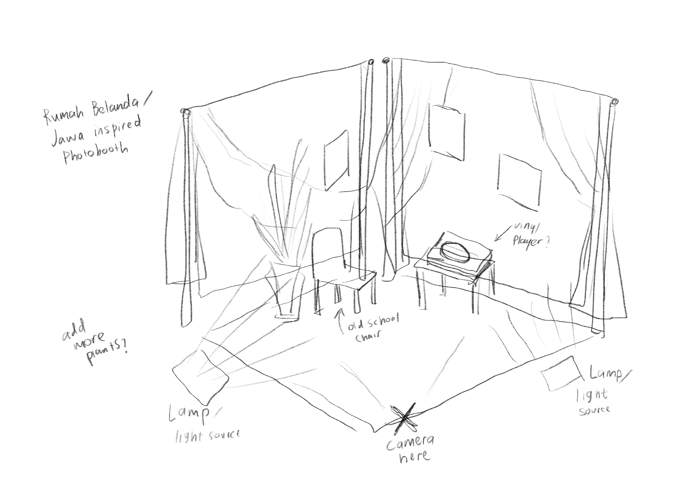
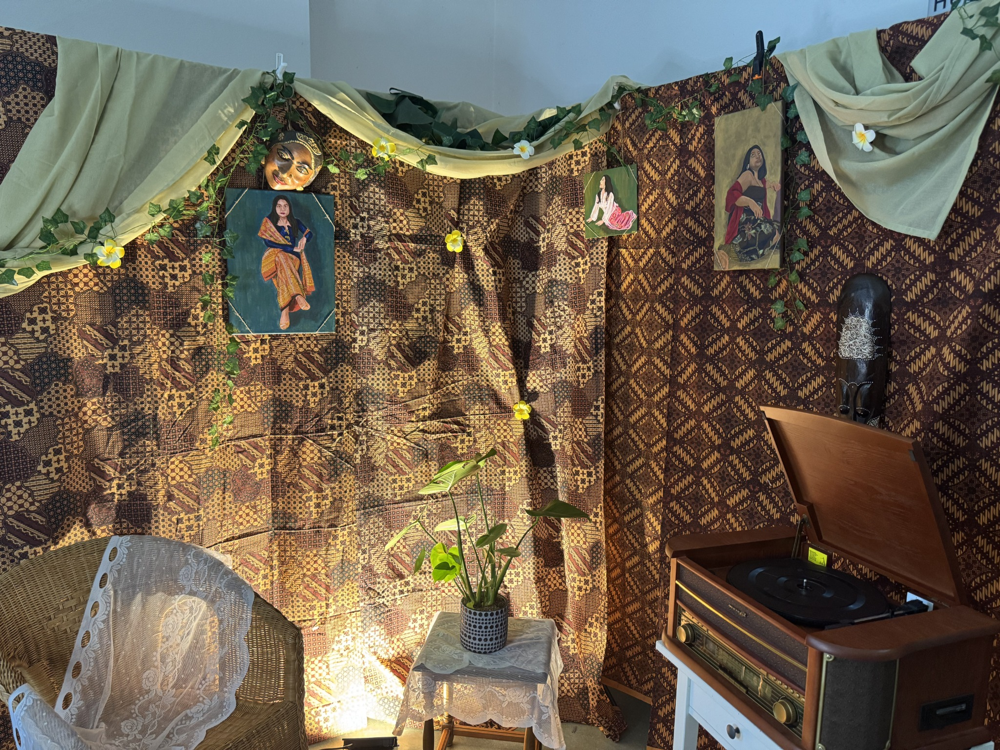

EVENT BRANDING / MULTIMEDIA PRODUCTION / 2026
NUSWANTARA
An Indonesian cultural night in Kiel, brought to life through visual design and multimedia production.

about the event
NUSWANTARA was an Indonesian cultural night held in Kiel, Germany, on 4 July 2026. Organised for an international audience, the event celebrated Indonesian culture through traditional performances, storytelling, live music, and a three-course dining experience.
As part of the organising committee, I collaborated with another team member on developing the event's visual identity. I then independently created several promotional and event materials, including the main poster, banners, and admission tickets.
My involvement also extended beyond graphic design. I created motion graphics, documented the event through photography and videography, and edited the final aftermovie.
Photobooth Concept & Setup
Photography · Videography · Editing
visual identity & graphic design
The event's visual identity was developed collaboratively, using a warm colour palette, expressive silhouettes, and decorative elements to establish a consistent visual direction.
I applied this shared direction across different promotional and event materials, adapting the compositions to suit each format and its purpose. The designs shown here were created independently by me.


photobooth concept & execution
In addition to the event's visual materials, I developed the initial concept sketch for the NUSWANTARA photobooth. The idea drew from a Rumah Belanda / Java-inspired setting, combining batik textiles, draped fabrics, greenery, lighting, and vintage-style props to create a warm, atmospheric backdrop.
I worked together with another team member to translate the concept into a physical installation for the event. I also created three paintings on canvas that were incorporated into the setup as decorative elements.
During the event, I worked as one of the photobooth attendants, assisting guests and operating the photobooth.


promotional motion & video
Alongside the static promotional materials, I contributed to the event's digital promotion through animation and video editing.
pencak silat motion graphics
I created a short looping animation featuring pencak silat silhouettes, carrying the event's visual identity into motion. The animation was published on NUSWANTARA's official Instagram account.
batagor preparation teaser
I edited a short promotional video featuring the preparation of batagor, one of the Indonesian dishes served at the event. My contribution focused on post-production using footage provided by the team.
event photography
I also documented NUSWANTARA through photography, capturing the performances, atmosphere, and moments throughout the cultural night.


videography & aftermovie
Beyond photography, I documented the event through video and edited the final aftermovie. The film brings together moments from the performances and the wider event experience, preserving the atmosphere of NUSWANTARA beyond the evening itself.